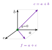
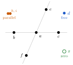
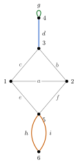
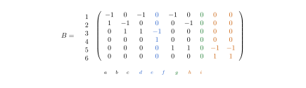
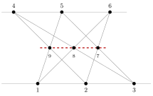
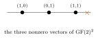
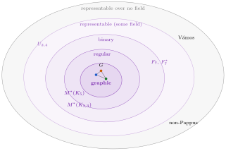
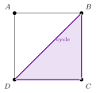
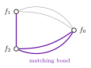
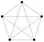

Let's pretend for a moment that you have always desired to combine what are, naturally, your favorite two subjects, linear algebra and graph theory (as they are everyone's). Also, let's unnecessarily impose the condition that you also hate eigenvectors and hence have been dismayed by the seemingly impossibly vast disconnect between linear algebra and graph theory outside of spectral graph theory. If you are this specific reader, then this post is for you.
Linear Algebra
Consider the following vectors,
$$\begin{array}{llll} \vec{a}=(1,0,0,0,0), & \vec{b}=(0,1,0,0,0), & \vec{c}=(1,1,0,0,0), & \vec{d}=(0,0,0,1,0),\\[2pt] \vec{e}=(0,0,1,0,0), & \vec{f}=(1,0,1,0,0), & \vec{g}=(0,0,0,0,0), & \vec{h}=(0,0,0,0,1),\\[2pt] \vec{i}=(0,0,0,0,2). & & & \end{array}$$Notice that $\vec{a},\vec{b},\vec{c},\vec{e},$ and $\vec{f}$ all have their last two coordinates equal to zero.
Because of this, we can view them as lying in $\mathbb{R}^3$ via their canonical projection onto it, as seen in Figure 1(a). Representing these 5 vectors as being co-planar, we can also obtain the useful diagram (b) of all the vectors together.


Suppose you are tasked with collecting all the independent sets of vectors from our collection. It is not hard to see that the points $\vec{a},\vec{b},\vec{c}$ are collinear, $\vec{a},\vec{e},\vec{f}$ are collinear as well, and the four points $\vec{b},\vec{c},\vec{e},\vec{f}$, no three of them collinear, are dependent as a group of four. Additionally, the vectors $\vec{h}$ and $\vec{i}$ are parallel, $\vec{g}=0$ is zero, and $\vec{d}$ is independent of everything. Therefore, we can list the minimal dependent sets,
$$\{\vec{g}\}, \quad \{\vec{h},\vec{i}\}, \quad \{\vec{a},\vec{b},\vec{c}\}, \quad \{\vec{a},\vec{e},\vec{f}\}, \quad \{\vec{b},\vec{c},\vec{e},\vec{f}\}.$$Since a subset of vectors from our collection is linearly independent exactly when it contains none of these minimal dependent sets, we can be satisfied with our classification of the independent sets of our collection of vectors.
Graph Theory
Now, consider the following graph, $G$. Suppose that you are now tasked with collecting all of the sets of edges that form no cycles in $G$.

A clever observation is noting that by finding the edge sets which form the minimal cycles in $G$, we can determine the sets of edges which form no cycles, as they are exactly the edge sets containing none of the minimal cycles. That is,
$$\{g\}, \{h,i\}, \{a,b,c\},\{a,e,f\},\{b,c,e,f\}$$So, while originally the questions look very different, we have seen they have exactly the same answer. Or rather that the same subsets are independent. Clearly, we created the example to achieve such a result. However, it illustrates that there is an underlying structure to the concept of independence that is (no pun intended) independent from either linearly independent vectors in linear algebra, or forests in graph theory. So, to put it bluntly, what is this?
Matroids
In 1935, Whitney studied the properties that are shared by linear independence among vectors and acyclicity among edges. He demonstrated that a lot can be deduced from their shared properties(Whitney, 1935). He named the resulting object a matroid, which we can hope suggests that it relates in some way to a matrix.
A matroid is defined as a finite set of elements, a ground set, together with a family of subsets denoted as independent, subject to three conditions:
- the empty set is independent;
- every subset of an independent set is independent;
- if $S$ and $T$ are independent and $S$ has fewer elements than $T$, then some element of $T$ can be added to $S$ keeping it independent.
A maximal independent set is called a basis, and a minimal dependent set is called a circuit.
With these definitions, returning to our two examples, we can see that they are not merely both matroids, but are the same1 matroid. Indeed, we will say that two matroids are isomorphic if there exists a bijection between their ground sets that induces one on their independent sets.
Anyone familiar with linear algebra is already well acquainted with the concept of linearly independent vectors. But perhaps less familiar is the graph version of a matroid. We can consider as our ground set the set of edges of a graph, and denote the forests of the graph as independent sets. Then, we can verify that this always forms a matroid which we (unimaginatively) call the graph's cycle matroid. Its bases are spanning forests, and its circuits are cycles.
So far, we have seen only one matroid. And, it arises both from a graph and from vectors. One might wonder if every graph's cycle matroid comes from vectors? Or, more generally, if every matroid does?
The incidence matrix
The first thing that we show is, as it turns out, that all cycle matroids can arise as a matroid coming from vectors as well.
The proof is not too difficult, and we present a brief sketch. Given a graph $G$, denote one coordinate for each vertex and choose an orientation for each edge arbitrarily. Then define the column of an edge directed from $u$ to $v$ as $\mathbf 1_v-\mathbf 1_u$, writing $\mathbf 1_w$ for the standard basis vector. These columns form the incidence matrix $B$, and it remains to show that a set of columns is linearly independent exactly when the corresponding edges form a forest. This would show that the cycle matroid of $G$ is representable. In general, we will say a matroid is representable whenever some collection of vectors realizes it in this way, that is, whenever it is isomorphic to a matroid coming from a set of vectors.
Suppose first that a set of edges contains a simple cycle. Traverse the cycle as $v_0,e_1,v_1,\dots,e_k,v_k=v_0$. Each edge $e_i$ joins $v_{i-1}$ and $v_i$, however, the edges' fixed orientation may run either way. Denote $\epsilon_i=+1$ if $e_i$ is oriented from $v_{i-1}$ to $v_i$, and $\epsilon_i=-1$ if it is not. In either case $\epsilon_i B_{e_i}=\mathbf 1_{v_i}-\mathbf 1_{v_{i-1}}$, so the following sum telescopes,
$$\sum_{i=1}^{k}\epsilon_i B_{e_i}=\sum_{i=1}^{k}\bigl(\mathbf 1_{v_i}-\mathbf 1_{v_{i-1}}\bigr)=\mathbf 1_{v_k}-\mathbf 1_{v_0}=\mathbf 0.$$Thus, it is a non-trivial linear combination of the columns of $B$ that sum to $0$. Hence, any set of columns containing a cycle is dependent.
We omit the other direction of the proof for the reader to verify.
From our graph $G$ a useful matrix to consider is $B$. The loop $\textcolor{#147828}{g}$ has both ends at vertex $4$, so its $-1$ and $+1$ fall in the same row and cancel. The parallel edges $\textcolor{#c85a00}{h}$ and $\textcolor{#c85a00}{i}$ join the same two vertices, so they are equivalent as column vectors. And, the bridge $\textcolor{#1e5ac8}{d}$ is the only edge other than the loop meeting vertex $4$, so its column is the only nonzero entry in row $4$. Now, we see that we have formed a different set of vectors than the ones we began with, but they represent the same matroid.

Do all matroids come from vectors?
Since we have now seen that every cycle matroid can be represented by vectors, and our only other example of a matroid thus far was already from linear algebra, it may be tempting to start thinking that every matroid can be formed from a set of vectors. In my opinion, this would be very disappointing: if every matroid came from vectors, then all of this would be nothing more than linear algebra, and our abstraction would have brought us nothing. We are lucky that it is not the case!
To build a counterexample, we first need one more way to picture a matroid. Recall that a basis is a maximal independent set. One of the consequences of the matroid axioms is that all bases have the same size, called the rank of the matroid. We'd say, for example, a rank-$3$ matroid is one where the largest independent sets are size $3$.
For rank-$3$ matroids, we can draw their elements as points. A dependent triple is then drawn as three points on a line. A line in our drawing then just means, “these three elements form a circuit.” Thus, we are allowed to draw points and lines first, and then consider after, if some actual set of vectors could have produced the same matroid. Such a picture of a matroid lets us choose which triples are lines, subject only to the matroid axioms.

Pretending for a moment that we remember Pappus's theorem from geometry, we can consider the following example. Put three points $1,2,3$ on one line and three points $4,5,6$ on another. Now draw the six lines joining the opposite pairs of points, and label the three opposite intersections by
$$9=\overline{15}\cap\overline{24},\qquad 8=\overline{16}\cap\overline{34},\qquad 7=\overline{26}\cap\overline{35},$$where $\overline{15}$ means the line through $1$ and $5$. Pappus's theorem says that $7,8,9$ must also be collinear. In other words, if the eight lines in Figure 4 come from points over a field, then the dashed ninth line must also.
After noticing all of this, the counterexample is simple. Keep the eight solid lines but not the ninth. We can define a matroid on the ground set $\{1,\dots,9\}$ as follows. The independent sets are all subsets of size at most $2$, together with all triples except
$$\{1,2,3\},\ \{4,5,6\},\ \{1,5,9\},\ \{2,4,9\},\ \{1,6,8\},\ \{3,4,8\},\ \{2,6,7\},\ \{3,5,7\}.$$Thus, the eight listed triples are the lines of the picture, while $\{7,8,9\}$ is independent. The reader can verify that this really is a matroid. Yet, it cannot be represented over any field. If vectors over a field represented it, then the eight listed triples would be collinear exactly as in the Pappus configuration. But Pappus's theorem would then force $7,8,9$ to be collinear too, contradicting the fact that our matroid declares $\{7,8,9\}$ independent.
Non-Pappus is not the only matroid representable over no field. Another famous example is the Vámos matroid, whose obstruction is less easy to see.2 In fact, examples like this are not rare. It is known that, as $n$ grows, the fraction of matroids on $n$ elements representable over any field tends to zero. So the surprising part is not that some matroids fail to come from linear algebra, but that the cycle matroid of $G$ is.
Representable over which field?
Among the matroids that are representable, there is another question we have been ignoring, which is where do the entries of our vectors come from? Up to now our vectors have had real entries, even though nothing in the definition of representability required that. We could just as well have asked for vectors with entries in $\mathbb{Q}$, or in the two-element field $\mathrm{GF}(2)$. As it turns out, a matroid representable over one field can fail to be representable over another.
Consider the matroid $U_{2,4}$, built by taking four elements and declaring a set independent exactly when it has at most two elements. To represent it, we need four nonzero vectors in a plane, no two of them parallel. The entire plane $\mathrm{GF}(2)^2$ contains only three nonzero vectors (Figure 5), thus it is not representable.

Another way a matroid can fail to be representable over a field has to do with the characteristic of the field. Consider the Fano plane $F_7$, a rank-$3$ matroid of seven elements whose picture has seven points and seven three-point lines. It can be shown that $F_7$ is representable over exactly the fields of characteristic $2$. Surprisingly, removing a single one of its lines produces the non-Fano matroid, which is representable over exactly the fields of characteristic not $2$ (Oxley, 2011). Thus, we can organize matroids into a hierarchy, from worst to best (just kidding): representable over no fields, representable over some field, representable over only one characteristic, and representable over every field. A matroid representable over $\mathrm{GF}(2)$ is called binary. The cycle matroid of a graph is called graphic.

Regular matroids
We call a matrix totally unimodular if every square submatrix has determinant $-1$, $0$, or $+1$. This may look arbitrary, but it is exactly the property that makes graphs special. Any graph's incidence matrix $B$ is totally unimodular.
Now, back to why this matters. Recall that a set of $r$ columns, with $r$ the rank of $B$, forms a basis exactly when its $r\times r$ submatrix has nonzero determinant. Total unimodularity turns “nonzero” to “$\pm 1$.” Since $\pm 1$ is nonzero in every field, the very same sets of columns are bases no matter which field we compute our determinants in. Such a matroid that is representable over every field is called regular, and we have just seen that every graphic matroid is regular.
Tutte proved two fundamental theorems about regular matroids. The first says that we do not actually need to check every field: a matroid is regular if and only if it is representable over both $\mathrm{GF}(2)$ and $\mathrm{GF}(3)$ (Tutte, 1958).
The second theorem requires one more definition. A minor of a graph is any graph obtained from it by deleting vertices/edges and contracting edges. It also makes sense to speak of one matroid containing another as a minor. With that language, Tutte's second theorem reads: a matroid is regular if and only if it contains none of $U_{2,4}$, $F_7$, and $F_7^{\ast}$ as a minor (Tutte, 1958). Here $F_7^{\ast}$ comes from the Fano plane by an operation called duality, which we will define properly soon. A list like this is a forbidden minor characterization.
One might now wonder how much bigger than graphic the regular matroids really are. The answer, is: not much. Every regular matroid can be assembled from graphic matroids, their duals, and one $10$-element matroid, glued together by a small set of operations (Seymour, 1980).
Duality and Planarity
Somehow, this is all be related to a graph's planarity. Consider $\mathrm{GF}(2)^m$, with one coordinate per edge. The matrix $B$ determines two subspaces. The first is its null space, the cycle space: an edge set is sent to zero by $B$ exactly when every vertex meets it an even number of times, which is the exact same as saying the edge set is a disjoint union of cycles. Its dimension is $\beta=m-n+c$, and for $G$ that is $4$, spanned by the loop, the two triangles, and the parallel pair. The second subspace is its row space, the cut space, whose members are the edge cuts; its dimension is $n-c$, which is $5$ for $G$. The smallest nonzero members of the cycle space are the cycles, and the smallest nonzero members of the cut space are the bonds, the minimal cuts. These two subspaces are orthogonal complements of one another, as, a vector is orthogonal to every row of $B$ exactly when $B$ sends it to zero.
It can be shown similarly that a representable matroid is determined by the row space of any matrix representing it, and we define the dual matroid $M^{\ast}$ by swapping that row space for its orthogonal complement. For the cycle matroid, this swap trades the cut space for the cycle space. So, for a graph, taking the matroid dual swaps cycles for bonds.
It helps to see this in a picture (Figure 7). On the left there is a planar graph, and on the right its dual. The three edges of the shaded triangle form a cycle, and the three dual edges crossing them form a bond. One set of three edges is a cycle on one side of the picture and an edge cut on the other.


A graph is planar if it can be drawn in the plane with no edges crossing. $G$ from earlier, is planar, as the drawing back in Figure 2 already has no crossings. Kuratowski's theorem says that a graph is planar if and only if it contains no subdivision of $K_5$ or $K_{3,3}$.
For any graph $G$, the dual matroid $M(G)^{\ast}$ exists, since the orthogonal complement is always a matroid. The real question is whether that dual matroid happens to be the cycle matroid of an actual graph. Whitney determined this question entirely in 1932: $M(G)^{\ast}$ is graphic if and only if $G$ is planar. Further, when $G$ is planar, the graph realizing it is exactly the planar dual $G^{\ast}$, so $M(G)^{\ast}=M(G^{\ast})$ (Whitney, 1932).
It is interesting to note the case for when $G$ is not planar. In such a case $M(G)^{\ast}$ is still a matroid, but is no longer the cycle matroid of any graph.
Two lists of forbidden minors
We have now built two forbidden-minor lists. We saw earlier that the regular matroids were characterized by three forbidden minors,
$$U_{2,4},\quad F_7,\quad F_7^{\ast}.$$Tutte also proved that the graphic matroids are characterized by a forbidden-minor list of their own. A matroid is graphic if it contains none of
$$U_{2,4},\quad F_7,\quad F_7^{\ast},\quad M(K_5)^{\ast},\quad M(K_{3,3})^{\ast}$$as a minor (Tutte, 1959). We notice that the first three are the same as the forbidden minors for being regular, so the entire difference between regular and graphic is only $M(K_5)^{\ast}$ and $M(K_{3,3})^{\ast}$.

As dualizing twice returns a matroid to itself, $M(K_5)^{\ast}$ is graphic if and only if $M(K_5)$ is cographic. We can notice by Whitney's theorem that this occurs if and only if $K_5$ is planar, which it is not. The same argument applies to $K_{3,3}$. Further, because $K_5$ and $K_{3,3}$ (Figure 8) are the minimal non-planar graphs, their duals are the minimal matroids that are cographic without being graphic, which is another way that you can see the relationship between the two forbidden-minor lists.
Fun ! ! !